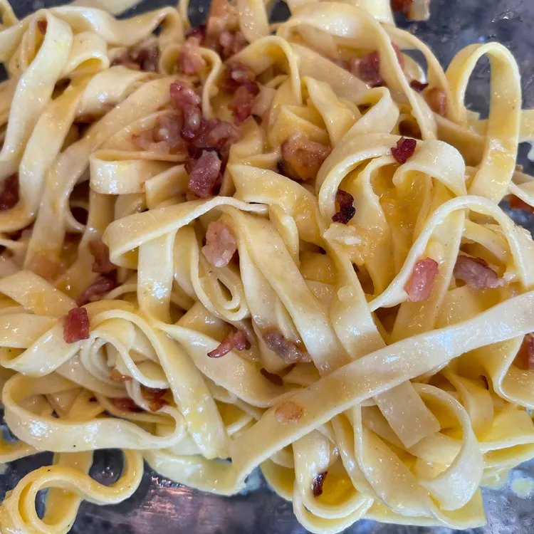

Fettucine Carbonara

Creamy and tasty Fettucine Carbonara
This fettuccine carbonara is a delectable, mouth-watering pile of yummy goodness! I recommend a nice salad with it — that's all you will need for a complete meal.
Ingredients
- 5 teaspoons
- 4 shallots,diced
- 1 pound bacon,cut into strips
- 1 large onion, cut into thin strips
- 1 clove garlic, chopped
- 1 package dry fettuccine pasta
- 3/4 cup shredded Parmesan cheese
- 1/2 cup heavy creamy
- 3 egg yolks
- sat and pepper to your taste
Directions
- Heat olive oil in a large heavy saucepan over medium heat. Sauté shallots until softened. Stir in bacon and onion; cook and stir until bacon is evenly browned. Stir in garlic when bacon is about half done. Remove from heat.
- Bring a large pot of lightly salted water to a boil. Add pasta and cook for 8 to 10 minutes or until al dente. Drain pasta, then return it to the pot.
- Whisk Parmesan, cream, and egg yolks together in a medium bowl. Pour bacon mixture over pasta; stir in cream mixture. Season with salt and pepper.
Go back Home!